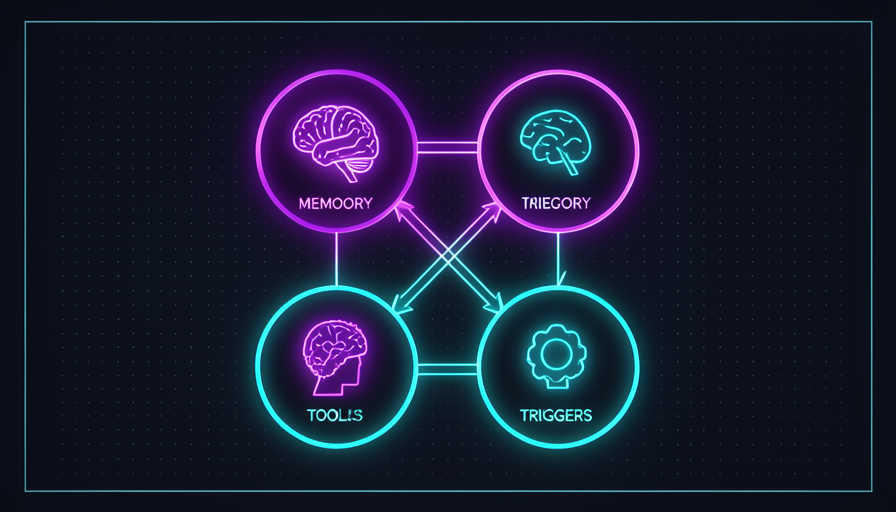

💡 Novo aqui? O que é um "Jarvis"
Jarvis é o apelido carinhoso para um assistente pessoal de IA — inspirado no assistente do Homem de Ferro. É uma IA que te conhece, lembra das suas coisas e executa tarefas por você, em vez de só responder perguntas soltas.
- Pessoal — é seu; sabe do seu contexto, dos seus arquivos, do seu jeito.
- Persistente — não esquece tudo a cada conversa; tem memória.
- Ativo — faz coisas (manda e-mail, organiza arquivo, busca dado), não só fala.
🤖 O que é um Jarvis
Você já sabe usar a IA pra fazer tarefas (foi a Trilha 2). Um Jarvis é o passo seguinte: em vez de você abrir o chat toda vez e explicar tudo de novo, você monta um assistente que já te conhece e fica de prontidão. Ele é montado uma vez e usado todo dia.
A diferença entre "usar a IA" e "ter um Jarvis" é a mesma entre chamar um táxi e ter um motorista particular. O táxi atende qualquer um e esquece você. O motorista sabe seus endereços, seus horários e seu jeito — está pronto antes de você pedir.
🔑 A ideia central
Três coisas separam um Jarvis de um chat comum:
- •Te conhece: tem o seu contexto guardado, não começa do zero.
- •Lembra: o que você falou ontem ainda vale hoje.
- •Executa: tem mãos — abre arquivos, manda mensagens, busca dados.
✓ É um Jarvis
- ✓Sabe quem você é sem você explicar
- ✓Lembra de conversas e decisões antigas
- ✓Faz tarefas de verdade no seu lugar
- ✓Fica pronto pra usar a qualquer hora
✗ NÃO é um Jarvis
- ✗Um chat que esquece tudo ao fechar
- ✗Onde você reexplica seu contexto sempre
- ✗Que só responde texto e nada faz
- ✗Um robô de ficção que pensa sozinho
🧩 As 4 peças: cérebro, memória, skills e gatilhos
Por mais sofisticado que pareça, todo Jarvis se reduz a quatro peças. Sabendo elas, qualquer assistente — simples ou avançado — deixa de ser mágica e vira um conjunto que você entende e monta.
🧠 Cérebro — a IA que pensa
É o motor de raciocínio (o Claude, por exemplo). Recebe o pedido, decide o que fazer e usa as outras peças. Sem ele, nada acontece.
💾 Memória — o que ele lembra
Onde fica o que importa: seus dados, suas preferências, decisões passadas. É o que faz o Jarvis "te conhecer" em vez de começar do zero toda vez.
🧰 Skills — o que ele sabe fazer
As habilidades concretas: mandar e-mail, ler planilha, criar imagem, buscar na web. Cada skill é uma "mão" a mais. Você verá uma biblioteca pronta no módulo 3.3.
⚡ Gatilhos — o que o aciona
O que faz o Jarvis começar a agir: você falando com ele, um horário do dia, um e-mail que chegou. É a "campainha". Aprofundamos no módulo 3.5.
💡 Dica pra fixar
Pense num funcionário novo: o cérebro é a cabeça dele, a memória é o caderno de anotações, as skills são as tarefas que ele sabe executar, e o gatilho é o "bom dia, pode começar". Faltou uma peça, o funcionário trava.
🔗 Como as peças conversam
As quatro peças não trabalham soltas — elas seguem uma ordem. Entender esse fluxo é o que separa montar um Jarvis que funciona de montar um Frankenstein que dá erro.
📖 Um exemplo do dia a dia
Você diz: "Jarvis, resume os e-mails de hoje e me manda no WhatsApp":
- 1.Gatilho: sua fala aciona o assistente.
- 2.Cérebro: entende o pedido e monta um plano.
- 3.Memória: lembra quais contas de e-mail são suas e seu número.
- 4.Skills: a skill de e-mail lê a caixa; a de WhatsApp envia.
💡 Por que isso importa
Quando algo der errado, você vai saber onde olhar: não acionou? é o gatilho. Esqueceu seu nome? é a memória. Não conseguiu mandar a mensagem? é a skill. Pensar por peças facilita consertar.
🏠 Local vs. nuvem: onde o Jarvis mora
Seu Jarvis precisa "morar" em algum lugar. Há dois endereços possíveis: o seu próprio computador (local) ou servidores na internet (nuvem). Nenhum é certo ou errado — é uma troca, e a escolha depende do que você valoriza.
🏠 Local (no seu PC)
- ✓Seus dados não saem da sua máquina
- ✓Sem mensalidade de servidor
- ✗Só funciona com o PC ligado
- ✗Você cuida da configuração
☁️ Nuvem (servidores)
- ✓Funciona 24h, mesmo com o PC desligado
- ✓Acessível do celular, de qualquer lugar
- ✗Costuma ter custo mensal
- ✗Seus dados passam por terceiros
Como decidir (regra de bolso)
💡 Não trave nisso agora
Para o seu primeiro Jarvis, local é mais simples e seguro: você testa no seu próprio computador, sem custo e sem expor nada. Migrar pra nuvem é uma decisão pra depois, quando você quiser que ele rode sozinho.
🔐 Privacidade e controle
Um assistente pessoal, por definição, lida com coisas suas — e-mails, arquivos, agenda. Por isso, antes de dar poder a ele, você decide o que ele pode ver, o que pode guardar e o que pode fazer sem te perguntar. Controle não é desconfiança; é bom senso.
A boa notícia: você está sempre no comando. O Jarvis é uma ferramenta que você configura — não um ser que decide sozinho. Quem desenha os limites é você.
✓ Boas práticas
- ✓Dê acesso só ao que ele precisa
- ✓Peça confirmação em ações sérias (apagar, enviar)
- ✓Comece com pouco e amplie aos poucos
- ✓Saiba onde a memória dele fica guardada
✗ Evite
- ✗Dar acesso total a tudo "pra facilitar"
- ✗Deixá-lo agir sozinho em coisas irreversíveis
- ✗Guardar senhas soltas na memória dele
- ✗Esquecer o que ele tem permissão de fazer
💡 A regra de ouro
Trate o seu Jarvis como um assistente novo de confiança limitada: você dá uma chave de cada vez, observa como ele usa, e só então amplia. Permissão se conquista — vale pra gente e vale pra IA.
📐 O plano do seu Jarvis: desenhar antes
A tentação é começar a montar logo. Mas, como bom maestro, você desenha antes de reger. Um plano de uma página evita retrabalho e te dá um norte. E desenhar é fácil: é só responder, em palavras suas, às quatro peças que você já conhece.

📝 As 4 perguntas do plano
- 🧠Cérebro: qual a tarefa principal que ele vai resolver pra você?
- 💾Memória: o que ele precisa saber sobre você pra fazer isso bem?
- 🧰Skills: quais ações concretas ele precisa executar?
- ⚡Gatilho: como e quando ele entra em ação?
🎯 Comece pequeno
Não tente um Jarvis que faz tudo. Escolha uma tarefa que te consome tempo toda semana e desenhe o plano só pra ela. Um Jarvis pequeno que funciona vale mais que um grande que nunca sai do papel.
✋ Antes de seguir — quais são as 4 peças de um Jarvis?
🎓 Resumo do módulo
Próximo módulo:
3.2 — 🔭 OpenClaw, Hermes e sistemas agênticos: as ferramentas prontas pra rodar o seu Jarvis e qual escolher.